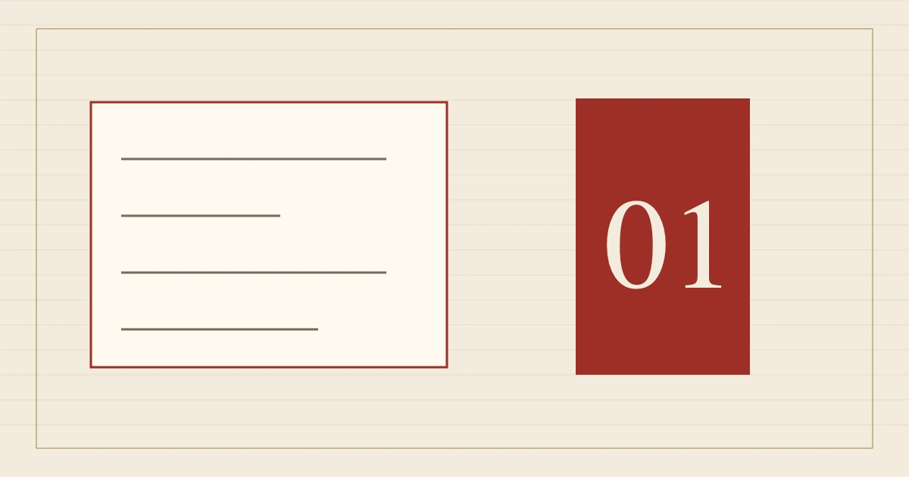

%%A1_EYEBROW%%
%%A1_TITLE%%
%%A1_INTRO%%
本叶目录
%%A1_SECTION_1_LABEL%%
%%A1_H2_1%%
%%A1_BODY_1%%
- %%A1_FIELD_1%%
- %%A1_VALUE_1%%
- %%A1_FIELD_2%%
- %%A1_VALUE_2%%
- %%A1_FIELD_3%%
- %%A1_VALUE_3%%
- %%A1_FIELD_4%%
- %%A1_VALUE_4%%
01
02
03
04
%%A1_SECTION_2_LABEL%%
%%A1_H2_2%%
%%A1_BODY_2%%
%%A1_SECTION_3_LABEL%%
%%A1_H2_3%%
%%A1_BODY_3%%
%%A1_BODY_3_MORE%%
%%A1_FAQ_TITLE%%
%%A1_FAQ_Q_1%%
%%A1_FAQ_A_1%%
%%A1_FAQ_Q_2%%
%%A1_FAQ_A_2%%